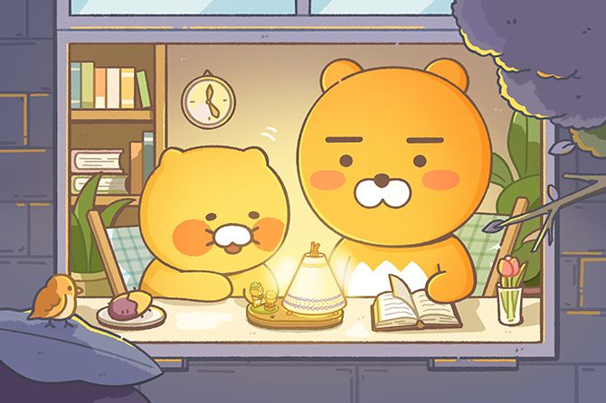

춘식이 설명
코리락쿠마 보러가기
제작자 프로필 보러가기
외형
상반신은 노란색이고 하반신은 갈색으로 마치 반쯤 까놓은 고구마를 연상시킨다.
또 얼굴은 작은 귀와 두터운 하얀색 코뽕, 좌우 2가닥씩의 수염이 특징적이다.
기분이 좋은 경우 연지곤지 같이 볼이 빨개지는 특징이 있다.
특징
라이언의 애완동물이다. 골판지 상자, 고구마 상자에 들어가 있는 걸 좋아한다.
가장 좋아하는 음식은 고구마이다.
그리고 제일 좋아하는 장난감은 강아지풀 장난감이다.
춘식이 일러스트
